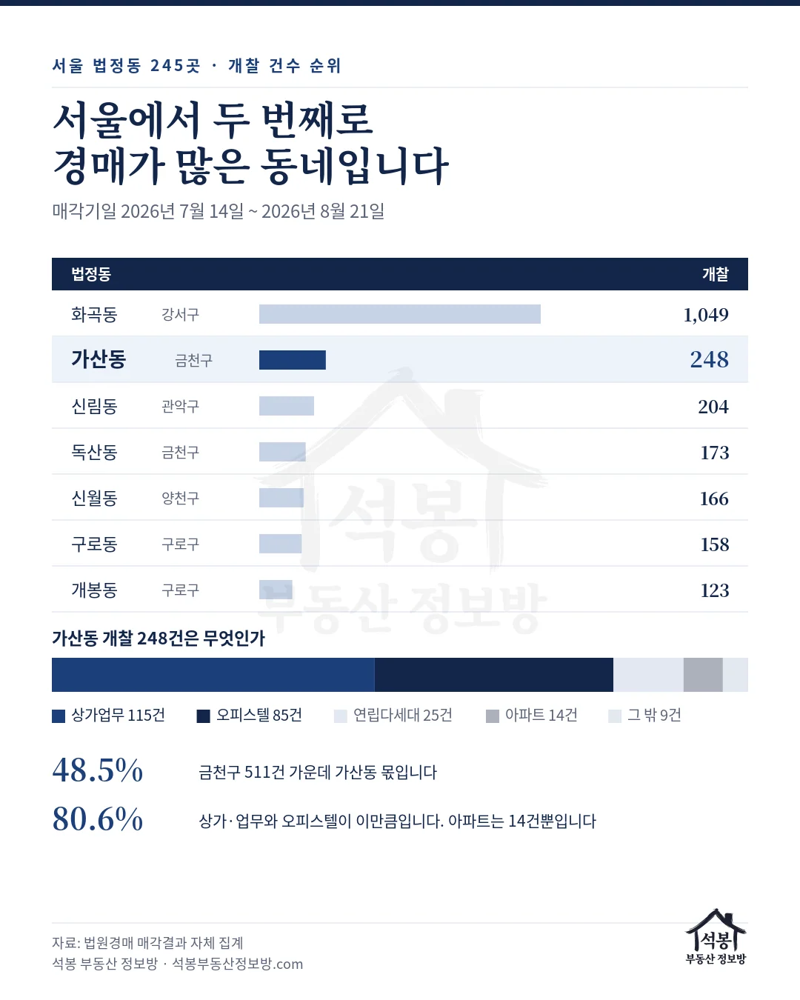
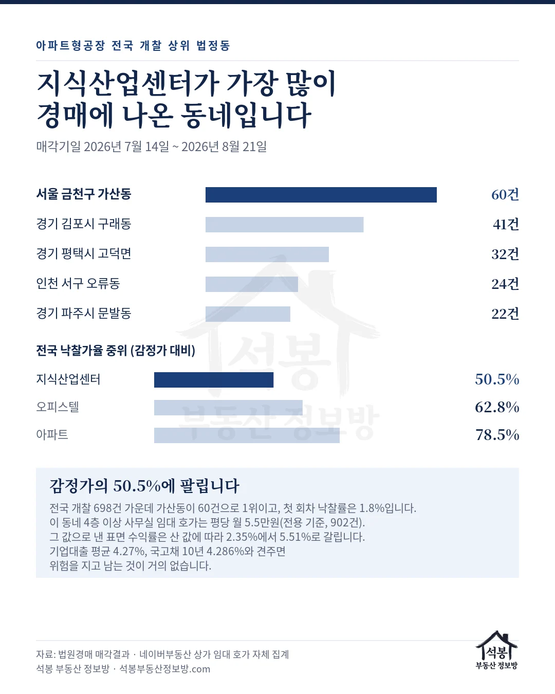
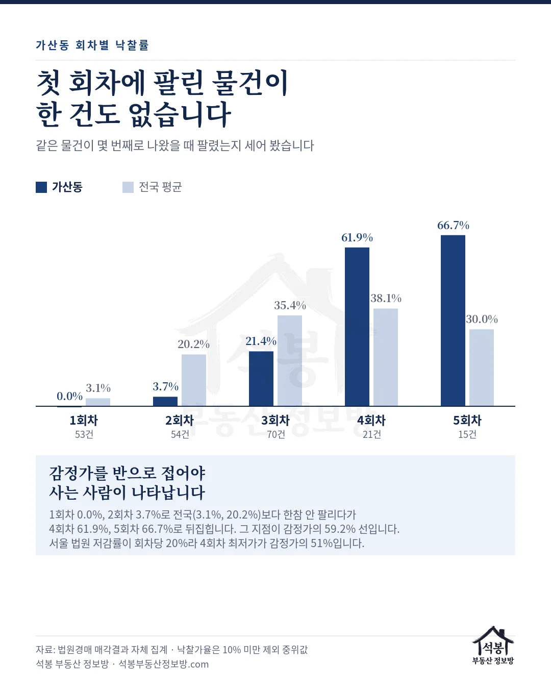

동네 하나를 골라 그 안의 경매와 공매를 통째로 들여다보는 시리즈, 두 번째는 서울 금천구 가산동입니다. 2026년 7월 14일부터 8월 21일까지 전국에서 열린 부동산 경매 개찰이 38,748건인데 그중 248건이 가산동에서 나왔습니다. 서울 245개 법정동 가운데 화곡동에 이어 두 번째입니다. 그런데 첫 회차에 열린 53건 가운데 팔린 물건이 한 건도 없습니다.
누르면 그 지역 실거래가 지도에서 바로 열립니다. 입찰가를 정할 때 감정가보다 먼저 봐야 할 자료입니다.
서울에서 두 번째로 경매가 많은 동네입니다
서울 법정동을 경매 개찰 건수로 줄 세워 봤습니다.
순위
법정동
개찰
서울 비중
1
화곡동 강서구
1,049
19.5%
2
가산동 금천구
248
4.6%
3
신림동 관악구
204
3.8%
4
독산동 금천구
173
3.2%
5
신월동 양천구
166
3.1%
6
구로동 구로구
158
2.9%
서울 전체 개찰이 5,377건입니다. 상위 다섯 개 동을 합치면 1,840건, 서울의 34.2%가 됩니다. 법정동이 245개인데 다섯 곳이 3분의 1을 갖고 있습니다. 가산동만 놓고 보면 금천구 511건 가운데 48.5%가 이 동네 하나에서 나왔습니다. 독산동이 4위이니 금천구는 두 동이 나란히 상위권에 있는 셈입니다.

서울 동별 순위 카드
여기서부터는 회원에게 보여드립니다
카카오 로그인 3초면 전문을 읽을 수 있습니다. 무료입니다.
가입하시면 지역 시장조사 보고서(약식)를 2회 무료로 요청하실 수 있습니다.
이미 회원이면 같은 버튼으로 로그인만 됩니다
화곡동과 정반대입니다
248건을 종류별로 갈랐습니다.
종류
개찰
낙찰
낙찰률
낙찰가율 중위
감정가 중위
상가·업무
115
20
17.4%
53.7%
3.58억
오피스텔
85
16
18.8%
70.2%
2.33억
연립·다세대
25
4
16.0%
67.1%
2.70억
아파트
14
2
14.3%
59.7%
1.12억
지난 회에 다룬 화곡동은 열에 여섯이 연립·다세대였습니다. 가산동은 상가·업무와 오피스텔이 200건, 80.6%이고 아파트는 14건뿐입니다. 서울 경매를 이야기할 때 흔히 쓰는 아파트 낙찰가율로는 이 동네를 한 줄도 설명하지 못합니다.
동네 전체 낙찰률은 16.9%입니다. 서울 평균 24.8%보다 8%포인트 가까이 낮고, 낙찰가율 중위도 65.1%로 서울 73.1%를 밑돕니다. 유찰 횟수 평균은 3.31회로 전국 평균 2.77회보다 깁니다.
건물 단위로 묶으면 한 곳에 몰린 경우가 보입니다. 지밸리더리브스마트타워가 12건인데 낙찰은 0건이고, 가산에이1타워는 11건 중 1건이 팔렸습니다. 오피스텔 쪽에서는 비즈트위트 바이올렛 5차 16건 중 3건, 금강노블레스 16건 중 5건입니다. 같은 건물에서 열 건 넘게 동시에 나오면 낙찰받은 뒤 세를 놓을 때 옆 호실과 경쟁하게 됩니다.
지식산업센터가 가장 많이 나온 동네입니다
가산동 상가·업무 115건 가운데 60건이 지식산업센터입니다. 등기부에는 아파트형공장으로 적히는 그것입니다. 전국 3,510개 법정동을 다 세어 봐도 가산동이 1위입니다.
순위
법정동
개찰
1
서울 금천구 가산동
60
2
경기 김포시 구래동
41
3
경기 평택시 고덕면
32
4
인천 서구 오류동
24
5
경기 파주시 문발동
22
전국 지식산업센터 경매는 698건이고, 그중 경기가 411건으로 가장 많습니다. 서울은 113건인데 그 절반이 넘는 60건이 가산동 한 곳입니다.
값이 문제입니다. 지식산업센터 낙찰가율 중위는 50.5%입니다. 같은 기간 아파트가 78.5%, 오피스텔이 62.8%입니다. 감정가를 반으로 접은 값에 팔린다는 뜻이고, 그것도 다섯 건 중 한 건만 팔립니다(낙찰률 18.1%).

지식산업센터 카드
네 번째 회차에야 팔립니다
같은 물건이 몇 번째로 나왔을 때 팔렸는지 세어 봤습니다. 전국 평균과 나란히 놓습니다.
회차
가산동 개찰
가산동 낙찰률
전국 낙찰률
가산동 낙찰가율
1회차
53
0.0%
3.1%
낙찰 없음
2회차
54
3.7%
20.2%
90.2%
3회차
70
21.4%
35.4%
67.7%
4회차
21
61.9%
38.1%
59.2%
5회차
15
66.7%
30.0%
48.5%
화곡동은 3회차에 54.6%로 뒤집혔습니다. 가산동은 한 칸 더 늦은 4회차입니다. 한 칸 차이 같지만 값으로는 크게 벌어집니다. 서울 법원의 저감률이 회차당 20%라 3회차 최저가는 감정가의 64%, 4회차는 51%입니다. 즉 이 동네는 감정가를 반으로 접어야 사는 사람이 나타납니다.
지식산업센터만 따로 보면 더 뚜렷합니다. 전국 기준으로 1회차 낙찰률이 1.8%, 2회차가 2.6%입니다. 3회차에 30.1%로 올라가고 4회차 36.8%에서 정점입니다. 앞의 두 회차는 사실상 아무도 응찰하지 않는 구간입니다.

회차별 카드
임대료로 계산해 보면 이유가 나옵니다
값이 반으로 접혀도 안 팔린다면 값이 문제가 아닙니다. 이 동네 상가와 사무실 임대 호가를 층별로 모아 봤습니다. 2026년 8월 19일 수집분 1,747건입니다.
층
호가 건수
평당 월세 중위
전용 면적 중위
1층
389
12.1만원
62㎡(18.8평)
2층
211
7.7만원
121㎡(36.6평)
3층
93
5.9만원
139㎡(42.0평)
4층 이상
902
5.5만원
117㎡(35.4평)
지하 1층
151
5.3만원
100㎡(30.3평)
평당 월세는 전용면적 기준입니다. 지식산업센터 사무실이 몰려 있는 4층 이상이 평당 월 5.5만원으로, 1층 상가의 45% 수준입니다. 호가가 가장 두꺼운 구간이기도 합니다. 902건이면 그 동네 사무실 시장 거의 전부입니다.
이 값은 방이 크든 작든 거의 같습니다. 4층 이상 902건을 면적대로 다시 갈라 보니 33~50㎡가 평당 5.0만원, 80~120㎡가 5.3만원, 200㎡ 이상이 5.9만원이었습니다. 20㎡ 미만 초소형만 9.4만원으로 튀는데 표본이 10건이라 빼고 봅니다. 사무실 임대료는 평당 5만원 언저리에서 굳어 있다고 보면 됩니다.
사무실 한 칸으로 풀어 보겠습니다
전용 117㎡(35.4평) 사무실 한 칸을 예로 들겠습니다. 4층 이상 호가 중위값 그대로면 보증금 1,982만원에 월세 195만원입니다. 1년이면 2,340만원이 들어옵니다. 여기까지는 값이 얼마든 똑같습니다.
달라지는 건 이 칸을 얼마에 사느냐입니다.
산 값
평당
매매가
표면 수익률
대출 60% 연이자
임대료에서 이자 빼면
싼 쪽
1,256만원
4.45억
5.51%
1,139만원
+1,201만원
비싼 쪽
2,870만원
10.16억
2.35%
2,603만원
263만원 모자람
대출 금리는 기업대출 평균 4.27%를 썼습니다(2026년 6월 신규취급 기준, 한국은행). 지식산업센터는 사업자 대출로 사는 물건이라 이 금리가 기준입니다.
같은 사무실인데 비싼 쪽으로 사면 월세를 다 받아도 이자가 모자랍니다. 사는 순간부터 매달 내 주머니에서 돈이 나갑니다. 싼 쪽으로 사면 연 1,201만원이 남습니다. 값이 반으로 접혀야 계산이 서는 물건이라는 뜻입니다. 경매장에서 지식산업센터가 감정가의 50.5%에 팔리는 것이 정확히 그 절반인데, 우연이라고 보기는 어렵습니다. 응찰하는 사람들은 이 계산을 이미 하고 들어옵니다.
왜 국고채를 같이 봐야 하나
국고채는 나라에 돈을 빌려주고 받는 이자입니다. 나라가 떼먹을 일은 없으니 위험이 없는 이자라고 부릅니다. 지금 10년물이 연 4.286%입니다(2026년 7월 월평균). 아무것도 하지 않고 그냥 두어도 연 4.3%를 받을 수 있다는 뜻입니다.
사무실을 사면 이야기가 다릅니다. 임차인을 직접 구해야 하고, 나가면 그달부터 수입이 0원이 되고, 그동안에도 관리비와 재산세는 나갑니다. 팔고 싶어도 몇 달이 걸립니다. 이 부담을 다 지고 손에 쥐는 것이 잘해야 5.51%, 나쁘면 2.35%입니다. 위험 없이 받는 4.286%와 견주면 수고한 값이 거의 남지 않습니다. 사람들이 응찰하지 않는 이유가 여기 있습니다.
대출을 끼면 한 겹 더 나빠집니다. 은행이 대출 금리를 정할 때 뿌리로 삼는 것이 국고채와 은행채 금리입니다. 국고채가 오르면 은행이 돈을 구해 오는 값이 오르고, 그 값이 대출 금리로 넘어옵니다. 실제로 국고채 10년은 2026년 1월 3.592%에서 7월 4.286%로 여섯 달 만에 0.694%p 올랐습니다. 같은 기간 예금 금리를 반영하는 COFIX도 2.77%에서 3.18%로 올랐습니다. 미국도 방향이 같습니다. 미국 국채 10년이 2025년 12월 4.14%에서 2026년 6월 4.47%로 0.33%p 올랐습니다.
정리하면 이렇습니다. 임대료는 층을 올라가도 면적을 키워도 평당 5만원 언저리에서 움직이지 않는데, 돈을 빌리는 값만 여섯 달 만에 0.694%p 올랐습니다. 이 어긋남이 풀리는 길은 둘뿐입니다. 임대료가 오르거나, 건물값이 내려가거나. 빈 사무실이 남아 있는 한 임대료 쪽은 기대하기 어렵습니다. 남는 것은 값입니다. 경매장에는 그 값이 이미 숫자로 찍혀 있습니다. 감정가의 50.5%입니다.
가산동 상업업무용 실거래는 2026년 6월부터 8월까지 36건뿐이고 그중 28건이 직거래입니다. 4층 이상 구분물건만 추리면 14건인데, 같은 평당가가 최대 네 번까지 반복됩니다. 한 사람이 같은 건물의 여러 호실을 한꺼번에 산 거래로 보입니다. 그래서 평당가를 하나로 확정하지 않고 소형(50㎡ 미만) 2,870만원과 중대형(80㎡ 이상) 1,256만원을 양쪽 끝으로 놓았습니다. 참고로 서울 전체 구분오피스 758건의 평당 중위는 2,337만원이고, 같은 사무실을 그 값(8.27억)에 샀다면 수익률은 2.9%입니다. 표본이 얇으니 방향을 읽는 참고치로만 보십시오.
공매에도 가산동이 있습니다
온비드 공매에서 소재지에 가산동이 들어간 물건은 61건입니다(개찰 2025년 7월 28일 ~ 2026년 8월 21일). 그중 팔린 것은 4건입니다. 물건 기준 낙찰률 6.6%입니다.
더 눈에 띄는 건 회차입니다. 이 61건이 개찰에 오른 횟수가 456회입니다. 한 물건이 평균 7.5번 입찰에 나왔다는 뜻입니다. 종류는 상가·업무 221회, 토지 129회, 공장·창고 90회 순입니다. 경매에서 본 그림이 공매에서도 그대로 반복됩니다.
가산동 물건을 볼 때 확인할 것
첫째, 1회차와 2회차는 기다리는 구간입니다. 이 동네에서 그 회차에 팔린 비율은 0.0%와 3.7%입니다. 2회차에 낙찰된 두 건의 낙찰가율 중위는 90.2%로 높습니다. 급하게 들어가면 비싸게 삽니다.
둘째, 임대료부터 확인하십시오. 지식산업센터와 구분오피스는 실수요자가 정해져 있는 물건입니다. 그 층의 임대 호가와 공실 상태를 보지 않고 감정가만 보면 계산이 어긋납니다. 위에 걸어 둔 가산동 상가·오피스 지도에서 같은 건물 실거래를 먼저 확인하십시오.
셋째, 같은 건물에서 몇 건이 나왔는지 세어 보십시오. 한 건물에서 열 건 넘게 나온 곳이 여럿입니다. 낙찰받은 뒤 임차인을 구할 때 그 물건들과 같은 시장에서 경쟁하게 됩니다.
넷째, 담보로 잡을 때는 감정가를 믿지 마십시오. 실제로 팔린 값이 감정가의 절반입니다. 지식산업센터를 담보로 회수 금액을 잡는다면 그 절반이 현실에 가깝습니다.
한 줄 요약
가산동 경매 개찰 248건은 서울 245개 법정동 가운데 2위이고, 금천구 전체의 48.5%입니다. 열에 여덟이 상가·업무와 오피스텔입니다. 1회차 낙찰 0건, 2회차 3.7%로 전국(3.1%, 20.2%)보다 한참 안 팔리다가 4회차 61.9%에서 뒤집힙니다. 그 지점이 감정가의 절반 언저리입니다. 지식산업센터는 전국 698건 중 60건이 이 동네이고 낙찰가율 중위가 50.5%입니다. 4층 이상 사무실 임대 호가는 평당 월 5.5만원이고, 이걸로 낸 표면 수익률은 산 값에 따라 2.35%에서 5.51%로 갈립니다. 기업대출 평균금리 4.27%, 국고채 10년 4.286%와 견주면 위험을 지고 남는 것이 거의 없습니다. 공매는 61건 중 4건만 팔렸습니다.
다음 회에는 인천 부평구 부평동을 다룹니다. 서울 밖 첫 편이고 오피스텔이 주력인 동네입니다. 인천 오피스텔은 낙찰률이 전국에서 가장 높은데, 화곡동·가산동과 무엇이 다른지 같은 잣대로 보겠습니다.
원자료: 법원경매 매각결과 공개자료(매각기일 2026년 7월 14일 ~ 8월 21일, 가산동 부동산 개찰 248건·전국 38,748건) · 온비드 공매(개찰 2025년 7월 28일 ~ 2026년 8월 21일, 가산동 61건) · 국토부 실거래(2026년 6월 ~ 8월 신고분, 가산동 상업업무용 매매 36건) · 네이버부동산 상가 임대 호가(2026년 8월 19일 수집 1,747건, 협상 전 호가) · 금리는 한국은행 ECOS(대출 2026년 6월, 국고채·COFIX 2026년 7월, 미국 국채 2026년 6월 월평균) · 기준일 2026년 8월 25일 낙찰가율은 지분 매각으로 추정되는 10% 미만을 뺀 중위값입니다. 면적과 평당 단가는 전용면적 기준입니다. 경매는 법원이 현행 목록만 공개해 과거 소급이 안 되므로 이 글의 수치는 39일 단면입니다. 수익률은 실거래 36건으로 낸 참고치이고 세금·관리비·공실은 넣지 않았습니다. 편집·제작: 석봉 부동산 정보방 · 개별 물건의 권리관계나 투자 가치를 보증하지 않으며, 본 자료는 정보 제공 목적이고 투자 권유가 아닙니다.